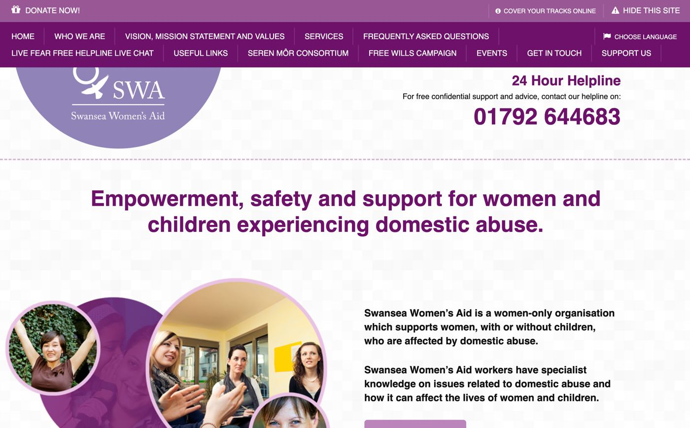
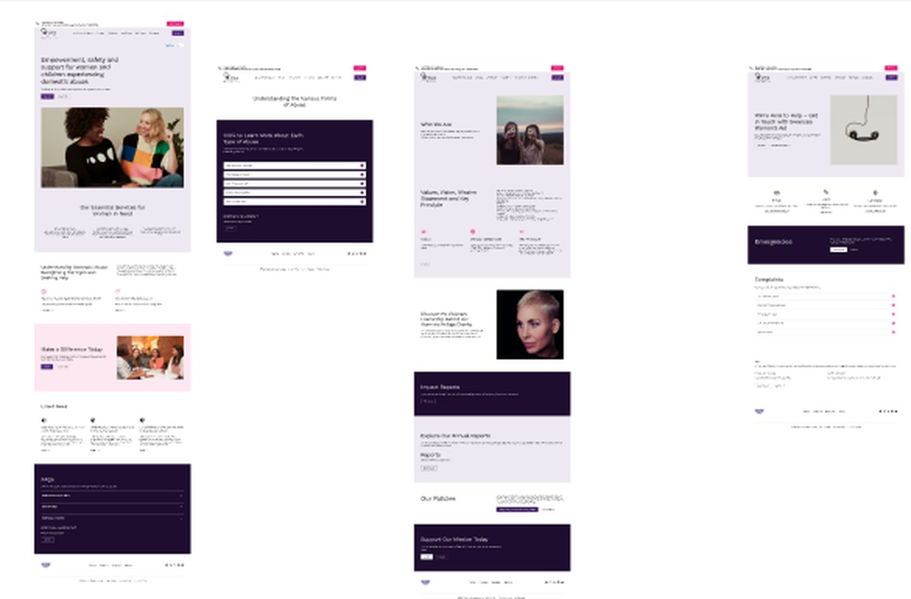

I help Swansea businesses find the friction points quietly costing them enquiries, and fix them — with a focused review rather than a full rebuild.
Most business websites aren't badly designed — they're just never properly looked at. A focused review usually finds more, faster, than a full redesign.
A focused look at one page or journey — your homepage, or the path from "interested" to "enquiry." You'll get five concrete, prioritised fixes you can hand straight to whoever maintains your site.
A structured review of your whole site: navigation, content clarity, mobile experience, accessibility basics, and how easily a visitor turns into an enquiry. Delivered as a written report plus a 30-minute walkthrough call.
An outside eye on an ongoing basis — reviewing new pages before they go live, sense-checking a redesign brief, or advising your marketing team.
For a law firm, a website isn't a brochure — it's often the first, and only, impression a stressed, time-pressured client gets before deciding whether to pick up the phone. Confusing navigation or a buried contact form doesn't just look dated: it costs enquiries you never hear about, because the person just leaves.
The same is true for most service businesses. A short review is usually enough to find where that's happening on your site.
"Many women weren't sure whether what they were experiencing counted as domestic abuse, or what support was actually available to them." — a research finding from the Swansea Women's Aid project that reshaped its entire homepage
A full website redesign for a local domestic abuse charity, built around three different audiences with very different needs — and very different amounts of time to find what they're looking for.


Swansea Women's Aid needed a site that worked harder for three audiences at once: women seeking help, often in a moment of crisis; donors and funders; and people looking to volunteer. Staff also needed to be able to post news and updates themselves, without relying on a developer.
I ran a stakeholder interview with the charity's team to understand their goals, then carried out user research — including interviews I commissioned through an external research partner — to understand real barriers. I also benchmarked the experience against Refuge's national site to see how a well-resourced organisation in the same space structured crisis messaging and support pathways.
Navigation was rebuilt around the three priority audiences, with crisis support first. A visible "quick exit" safety feature was made prominent rather than buried, and a plain-language section on recognising abuse was added to reduce confusion. Staff login moved to the footer to keep the main site focused on visitors, sitting on top of a lightweight CMS so the team could publish news and events without developer help.
The research and redesign fed directly into the charity's production site, live today at swanseawomensaid.com — structured around what someone actually needs in the moment they land on it: support first, then ways to give or get involved. I also built a full working version of the site myself (Django, Stripe donations, a staff-manageable CMS) as part of my own development training.
I'm Sara, a UX designer based in Swansea.
I trained through a Level 5 Diploma in Web Application Development, focusing on accessible, research-led websites — including a full redesign for Swansea Women's Aid, grounded in stakeholder interviews and user research I commissioned myself.
I now work with local businesses who want their website to build trust and win more enquiries, without the overhead of a full agency engagement. I keep projects small and focused on purpose — a short, sharp review is often worth more than a ground-up redesign.
If you're not sure where to start, the Quick-Win Snapshot is the easiest way in — three days, one clear set of fixes, no commitment beyond that.